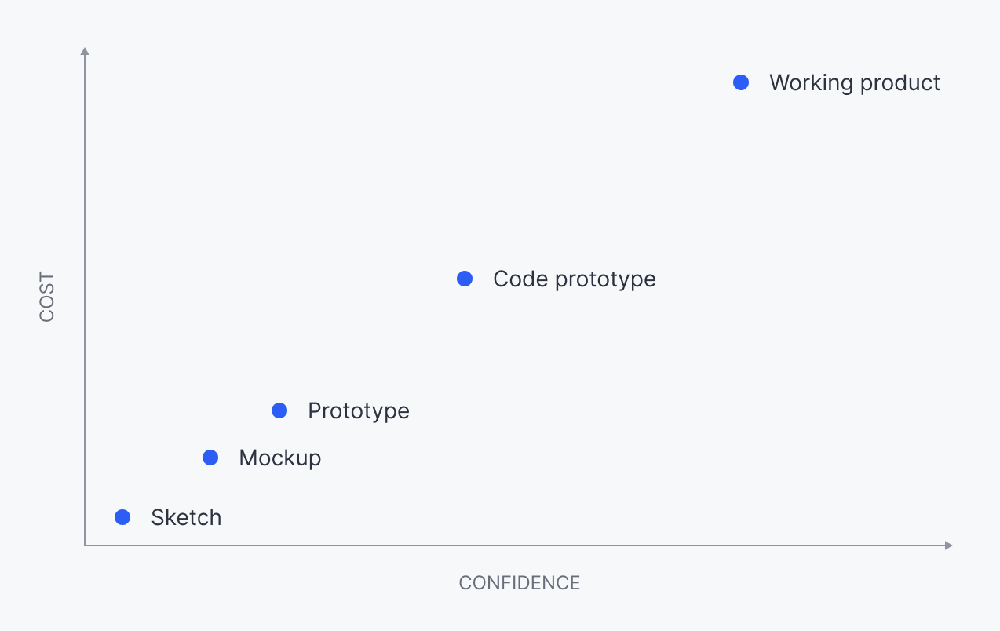
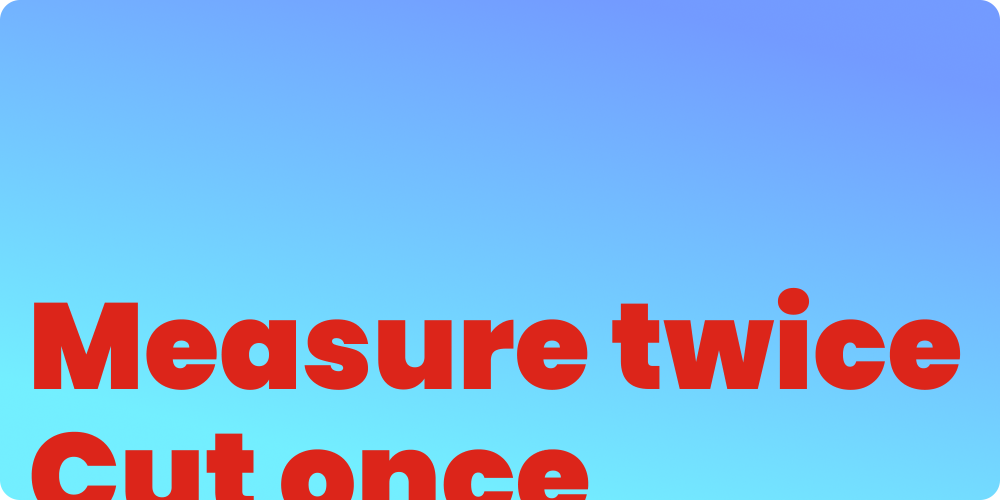

How does an ancient carpentry expression apply to digital product design?
Consider this expression, well known in carpentry:
Measure twice, cut once.
We’re talking about wood, of course. Now, carpentry is a lot like any kind of design: We’re talking about designing and making something for a client here. The client has very specific needs — a specific room that the furniture needs to work in, for instance. Here’s a scenario:
Ola has a new loft conversion. She hires a carpenter, Julia, to make a staircase so she can access it. Julia starts cutting wood, to see if it will fit in the spaces required.
This is obviously ridiculous. No carpenter would ever do this. Imagine how long it would take Julia if she cut the wood first, then measured to see if it fitted! Imagine the waste of time and materials involved!
But amazingly, many teams creating software do exactly this. They ‘cut the software’ — a process that can take weeks, months, or even years — THEN they measure the results.
You can imagine what happens — people can’t use the software. It doesn’t work as intended, they don’t understand it, and it doesn’t meet their needs. In short, it’s a waste of time, and the team will have to go back, try to measure what’s needed, cut again, and eventually measure again. The vicious cycle continues.
How does this apply to software?
OK Bill — you’re talking about carpentry, this is all very well but how does this apply to digital product design?
First: Design is an old and noble tradition. Older even than carpentry! The lessons we’ve learnt over the millenia about designing and building things apply perfectly well today.
As a design instructor and mentor, I encourage designers to help their teams “measure before they cut” — saving them the time and expense of building the wrong thing. With just a little upfront effort, we can save product teams from ‘building blind’ and making expensive mistakes. By measuring ‘up front’, we lower risk, and speed up the process of ‘getting to good’ — building products that provide value by solving real user problems. Here’s how we do this:
- We measure what users want — through interviews, surveys, and by prioritising feature requests.
- We measure the appetite of our stakeholders for the feature — how much effort do we want to put into building it? Do we want something basic in two weeks, or do we want the deluxe version in six?
- We measure how effective our ideas are, by designing and testing mockups and prototypes. This helps us build confidence in our solutions, till we get to the point where it makes sense to commit an engineering team to building something — ‘cutting the wood’.
- Once a feature is released, we measure how well it fits the needs of our users. How could we improve it? What’s missing? Bigger feature requests will have to be prioritised for the next cycle, but sometimes we can quickly fix small details that make a big difference to the product experience.
The confidence to cost dynamic
“Measuring twice” is relatively cheap — the cost mounts as you move upwards in fidelity. If you’ve done your job well at the ‘measurement’ stage, you can be confident that building your design will add value for your users and the business.

When collaborating with product teams of researchers, designers, and engineers I advocate for a structured design process:from early sketches to mockups, to a Figma (or similar) prototype, to a code prototype, and finally to the working product. At every stage we gather feedback from our users (“measuring”) to make sure we’re on track. At every stage, we lower the risk that our investment (of time, and people, and ultimately, money) will fail.
Without clear measurement criteria in place, the first instance where you find out that the ‘successfully’ released project isn’t so successful is usually when the complaints come rolling in — or revenue starts to take a hit.
Rob W, HSBC
What about when the software is ‘cut’?
Obviously, once ‘cut’ the design is not set in stone. Working in software means we have a malleable material — there is no need for a design to remain static once built. However, the problem with changing software is that it’s expensive in two main ways:
- The costs in time, people, and money for your company
- The costs to customers as they have to re-learn your software
For this reason, it’s always worth testing ideas quickly and cheaply before you invest in building them. Get things right, or as close to right as you can the first time and your customers will love you. Sketching, prototyping, and testing your designs is the way you measure first.
Many in the incubator community will argue you only need a minimum viable product. I obviously take issue. Building something doesn’t make you a business!
Shaun Illingworth
In summary
It might feel quicker just to ‘build something’ in code, but in practice this tends to be a slow and risky process. So — when planning your next product or feature, remember the carpenter: Measure twice (or perhaps, several times!), and cut once.

How do I get started?
There are so many resources available, but if you get one book on testing designs make it Sprint by Jake Knapp. So many great techniques in this book that you can apply in many situations, not just short sprints.
Another book well worth looking into is Lean UX by Jeff Gothelf. Everything you ever wanted to know about building a successful product, fast.
Finally if you’re new to UX in general, check out my guide here: How to Get Started with UX.